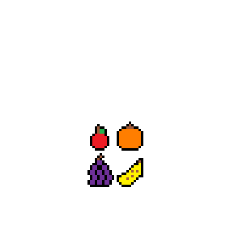

Objetivo: Evitar que Tamagotchi muera de depresión, hambre o sueño.
Aparece una ventana emergente que te pide que introduzcas un número, dependiendiendo de este el tamagochi podrá ser alimentado, jugará para ser feliz y dormirá para recibir energía
Consigue que sobreviva 3 minutos para completar el minijuego
